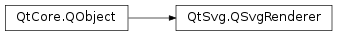

QSvgRenderer¶
Synopsis¶
Functions¶
- def
animated() - def
animationDuration() - def
boundsOnElement(id) - def
currentFrame() - def
defaultSize() - def
elementExists(id) - def
framesPerSecond() - def
isValid() - def
matrixForElement(id) - def
setCurrentFrame(arg__1) - def
setFramesPerSecond(num) - def
setViewBox(viewbox) - def
setViewBox(viewbox) - def
viewBox() - def
viewBoxF()
Slots¶
Signals¶
- def
repaintNeeded()
Detailed Description¶
The
PySide2.QtSvg.QSvgRendererclass is used to draw the contents of SVG files onto paint devices.Using
PySide2.QtSvg.QSvgRenderer, Scalable Vector Graphics (SVG) can be rendered onto anyPySide2.QtGui.QPaintDevicesubclass, includingPySide2.QtWidgets.QWidget,PySide2.QtGui.QImage, andPySide2.QtOpenGL.QGLWidget.
PySide2.QtSvg.QSvgRendererprovides an API that supports basic features of SVG rendering, such as loading and rendering of static drawings, and more interactive features like animation. Since the rendering is performed usingPySide2.QtGui.QPainter, SVG drawings can be rendered on any subclass ofPySide2.QtGui.QPaintDevice.SVG drawings are either loaded when an
PySide2.QtSvg.QSvgRendereris constructed, or loaded later using thePySide2.QtSvg.QSvgRenderer.load()functions. Data is either supplied directly as serialized XML, or indirectly using a file name. If a valid file has been loaded, either when the renderer is constructed or at some later time,PySide2.QtSvg.QSvgRenderer.isValid()returns true; otherwise it returns false.PySide2.QtSvg.QSvgRendererprovides thePySide2.QtSvg.QSvgRenderer.render()slot to render the current document, or the current frame of an animated document, using a given painter.The
PySide2.QtSvg.QSvgRenderer.defaultSize()function provides information about the amount of space that is required to render the currently loaded SVG file. This is useful for paint devices, such asPySide2.QtWidgets.QWidget, that often need to supply a size hint to their parent layout. The default size of a drawing may differ from its visible area, found using thePySide2.QtSvg.QSvgRenderer.viewBox()property.Animated SVG drawings are supported, and can be controlled with a simple collection of functions and properties:
- The
PySide2.QtSvg.QSvgRenderer.animated()function indicates whether a drawing contains animation information.- The
PySide2.QtSvg.QSvgRenderer.framesPerSecond()property contains the rate at which the animation plays.Finally, the
PySide2.QtSvg.QSvgRendererclass provides thePySide2.QtSvg.QSvgRenderer.repaintNeeded()signal which is emitted whenever the rendering of the document needs to be updated.See also
PySide2.QtSvg.QSvgWidgetQt SVG C++ Classes SVG Viewer ExamplePySide2.QtGui.QPicture
-
class
PySide2.QtSvg.QSvgRenderer([parent=nullptr])¶ -
class
PySide2.QtSvg.QSvgRenderer(contents[, parent=nullptr]) -
class
PySide2.QtSvg.QSvgRenderer(contents[, parent=nullptr]) -
class
PySide2.QtSvg.QSvgRenderer(filename[, parent=nullptr]) Parameters: - filename – unicode
- contents –
PySide2.QtCore.QXmlStreamReader - parent –
PySide2.QtCore.QObject
Constructs a new renderer with the given
parent.Constructs a new renderer with the given
parentand loads the SVG data using the stream reader specified bycontents.Constructs a new renderer with the given
parentand loads the SVG data from the byte array specified bycontents.Constructs a new renderer with the given
parentand loads the contents of the SVG file with the specifiedfilename.
-
PySide2.QtSvg.QSvgRenderer.animated()¶ Return type: PySide2.QtCore.boolReturns true if the current document contains animated elements; otherwise returns false.
-
PySide2.QtSvg.QSvgRenderer.animationDuration()¶ Return type: PySide2.QtCore.intReturns the number of frames in the animation, or 0 if the current document is not animated.
-
PySide2.QtSvg.QSvgRenderer.boundsOnElement(id)¶ Parameters: id – unicode Return type: PySide2.QtCore.QRectFReturns bounding rectangle of the item with the given
id. The transformation matrix of parent elements is not affecting the bounds of the element.
-
PySide2.QtSvg.QSvgRenderer.currentFrame()¶ Return type: PySide2.QtCore.int
-
PySide2.QtSvg.QSvgRenderer.defaultSize()¶ Return type: PySide2.QtCore.QSizeReturns the default size of the document contents.
-
PySide2.QtSvg.QSvgRenderer.elementExists(id)¶ Parameters: id – unicode Return type: PySide2.QtCore.boolReturns true if the element with the given
idexists in the currently parsed SVG file and is a renderable element.Note: this method returns true only for elements that can be rendered. Which implies that elements that are considered part of the fill/stroke style properties, e.g. radialGradients even tough marked with “id” attributes will not be found by this method.
-
PySide2.QtSvg.QSvgRenderer.framesPerSecond()¶ Return type: PySide2.QtCore.int
-
PySide2.QtSvg.QSvgRenderer.isValid()¶ Return type: PySide2.QtCore.boolReturns true if there is a valid current document; otherwise returns false.
-
PySide2.QtSvg.QSvgRenderer.load(filename)¶ Parameters: filename – unicode Return type: PySide2.QtCore.boolLoads the SVG file specified by
filename, returning true if the content was successfully parsed; otherwise returns false.
-
PySide2.QtSvg.QSvgRenderer.load(contents) Parameters: contents – PySide2.QtCore.QXmlStreamReaderReturn type: PySide2.QtCore.boolLoads the specified SVG in
contents, returning true if the content was successfully parsed; otherwise returns false.The reader will be used from where it currently is positioned. If
contentsisnull, behavior is undefined.
-
PySide2.QtSvg.QSvgRenderer.load(contents) Parameters: contents – PySide2.QtCore.QByteArrayReturn type: PySide2.QtCore.boolLoads the specified SVG format
contents, returning true if the content was successfully parsed; otherwise returns false.
-
PySide2.QtSvg.QSvgRenderer.matrixForElement(id)¶ Parameters: id – unicode Return type: PySide2.QtGui.QMatrixReturns the transformation matrix for the element with the given
id. The matrix is a product of the transformation of the element’s parents. The transformation of the element itself is not included.To find the bounding rectangle of the element in logical coordinates, you can apply the matrix on the rectangle returned from
PySide2.QtSvg.QSvgRenderer.boundsOnElement().
-
PySide2.QtSvg.QSvgRenderer.render(p, elementId[, bounds=QRectF()])¶ Parameters: - p –
PySide2.QtGui.QPainter - elementId – unicode
- bounds –
PySide2.QtCore.QRectF
Renders the given element with
elementIdusing the givenpainteron the specifiedbounds. If the bounding rectangle is not specified the SVG element is mapped to the whole paint device.- p –
-
PySide2.QtSvg.QSvgRenderer.render(p, bounds) Parameters: - p –
PySide2.QtGui.QPainter - bounds –
PySide2.QtCore.QRectF
Renders the current document, or the current frame of an animated document, using the given
painteron the specifiedboundswithin the painter. If the bounding rectangle is not specified the SVG file is mapped to the whole paint device.- p –
-
PySide2.QtSvg.QSvgRenderer.render(p) Parameters: p – PySide2.QtGui.QPainterRenders the current document, or the current frame of an animated document, using the given
painter.
-
PySide2.QtSvg.QSvgRenderer.repaintNeeded()¶
-
PySide2.QtSvg.QSvgRenderer.setCurrentFrame(arg__1)¶ Parameters: arg__1 – PySide2.QtCore.int
-
PySide2.QtSvg.QSvgRenderer.setFramesPerSecond(num)¶ Parameters: num – PySide2.QtCore.int
-
PySide2.QtSvg.QSvgRenderer.setViewBox(viewbox)¶ Parameters: viewbox – PySide2.QtCore.QRectSee also
-
PySide2.QtSvg.QSvgRenderer.setViewBox(viewbox) Parameters: viewbox – PySide2.QtCore.QRectF
-
PySide2.QtSvg.QSvgRenderer.viewBox()¶ Return type: PySide2.QtCore.QRectReturns
PySide2.QtSvg.QSvgRenderer.viewBoxF().toRect().
-
PySide2.QtSvg.QSvgRenderer.viewBoxF()¶ Return type: PySide2.QtCore.QRectF
© 2018 The Qt Company Ltd. Documentation contributions included herein are the copyrights of their respective owners. The documentation provided herein is licensed under the terms of the GNU Free Documentation License version 1.3 as published by the Free Software Foundation. Qt and respective logos are trademarks of The Qt Company Ltd. in Finland and/or other countries worldwide. All other trademarks are property of their respective owners.